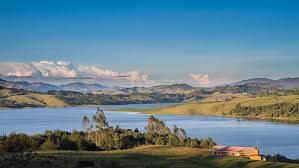
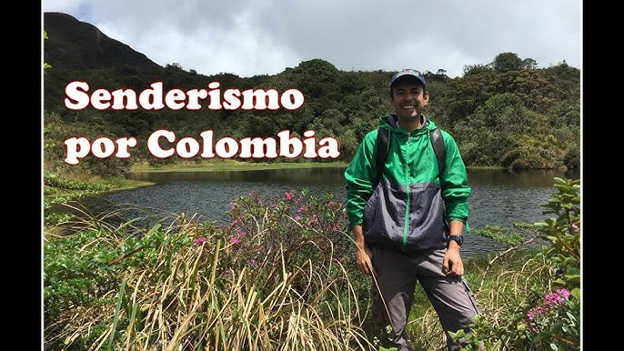
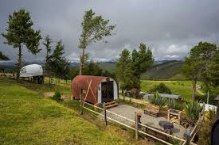
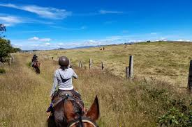
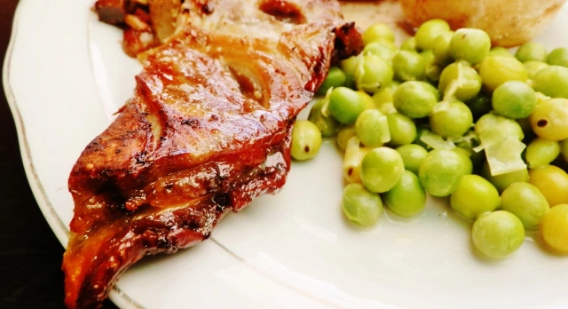
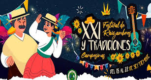

Visitar el Embalse del Sisga
El Embalse del Sisga es uno de los principales atractivos turísticos de Chocontá. Los visitantes pueden disfrutar de: Paseos en bote: Recorridos por las tranquilas aguas del embalse. Pesca recreativa: Una actividad popular entre los aficionados. Picnics y caminatas: El entorno natural es perfecto para disfrutar de la vista, hacer caminatas y relajarse al aire libre.
Senderismo y Caminatas Ecológicas
Chocontá está rodeado de montañas y paisajes rurales, lo que lo convierte en un lugar ideal para: Rutas de senderismo: Explorar los alrededores y disfrutar de la biodiversidad de la región. Avistamiento de aves: La zona cuenta con una rica variedad de especies de aves para los amantes de la naturaleza.
turismo rural y experiencias en fincas
Muchos turistas visitan Chocontá para tener experiencias auténticas de vida rural. Algunas actividades incluyen: Visitas a fincas productoras: Donde se puede conocer de cerca el cultivo de papa, hortalizas y otros productos agrícolas. Degustación de productos locales: Disfrutar de la gastronomía tradicional, como los platos a base de papa y mazamorra chiquita. Participar en labores agrícolas: Algunas fincas ofrecen la posibilidad de participar en la siembra y cosecha de productos.
Rutas en Caballo
Los paseos a caballo son una manera popular de explorar los paisajes rurales de Chocontá. Muchos fincas locales ofrecen esta actividad para que los visitantes puedan recorrer los campos y montañas de una manera relajante.
Degustación de la Gastronomía Local
No puedes dejar de probar la comida típica de Chocontá, que incluye: Mazamorra chiquita: Un tradicional plato de la región hecho a base de maíz. Sopa de papa y hortalizas: Reflejo de la riqueza agrícola de la zona. Productos lácteos frescos: Provenientes de la ganadería local.
eventos y festividades locales
Chocontá celebra varias festividades a lo largo del año, en las que puedes participar si visitas durante las fechas indicadas: Fiestas religiosas: En honor a San Miguel Arcángel, el patrono del municipio. Festividades agrícolas: Donde se celebran las cosechas y se realizan actividades culturales y gastronómicas..
